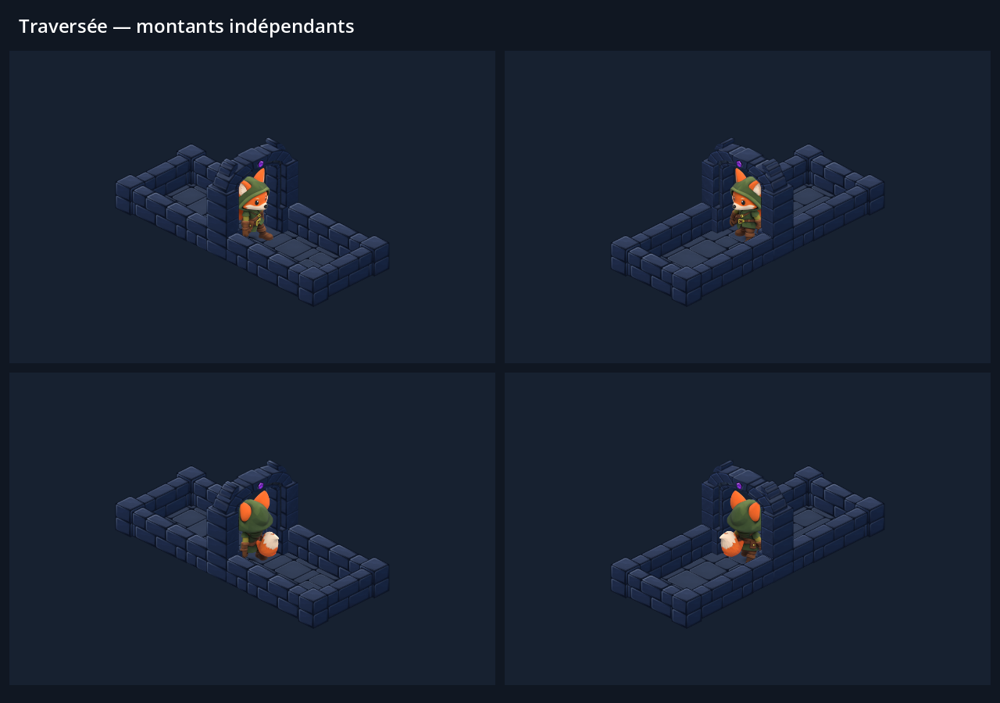

Le héros passe entre les deux montants
L’ancien découpage dessinait les deux côtés de la porte ensemble. Ils peuvent maintenant entourer le héros correctement : le montant éloigné passe derrière lui, le montant proche reste devant. Les proportions, la texture et les poses sont conservées.

Captures natives Godot, quatre directions synchronisées. Le curseur permet de comparer exactement la même position avant et après correction. Les images utilisent la dernière texture avec ferrures en « # ».
La correction est partagée par le jeu et les scènes. Les portes fermées conservent leur battant ; les portes déverrouillées ou brisées conservent leurs deux montants et le haut de l’arche.
863 contrôles de passage, 84 contrôles d’ouverture et d’ordre d’affichage côté jeu, 87 contrôles des badges : aucun échec. Crochetage vérifié dans les quatre orientations et quatre tailles de fenêtre. Même mémoire de textures, aucun nouvel APK.
Explication et reproduction · Passage · Vérification côté jeu · Éléments conservés · Texture de la porte